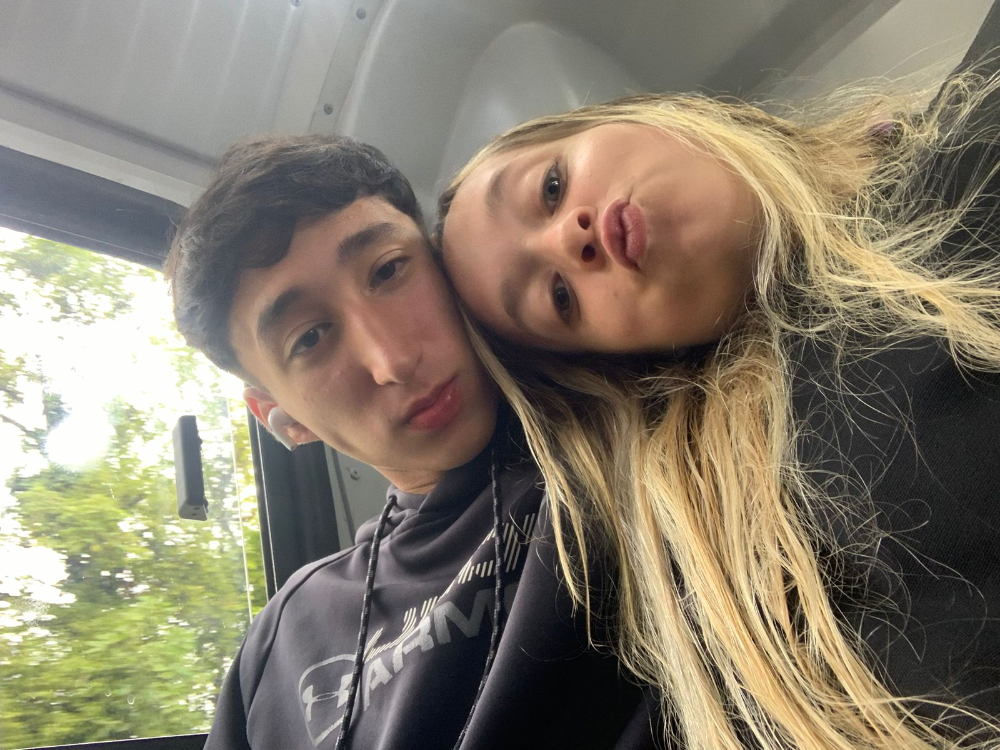

Eu e meu amor

Amor da minha vida, Desde que eu te conheci, você foi a melhor coisa que me aconteceu. Cada momento ao seu lado é uma verdadeira bênção. Você é minha paz, minha alegria e o melhor que a vida poderia me oferecer. Com você, os dias têm mais brilho, as dificuldades se tornam menores e o amor parece ter sentido em cada detalhe.
Eu sou grato por te ter ao meu lado, por poder compartilhar risos, abraços e até os silêncios que, ao seu lado, nunca são vazios. Cada olhar, cada gesto seu me faz perceber que encontrei minha pessoa. Agradeço ao universo por ter cruzado nossos caminhos.
"Te amo mais do que palavras podem expressar, e sei que, com você, tudo será sempre mais bonito."